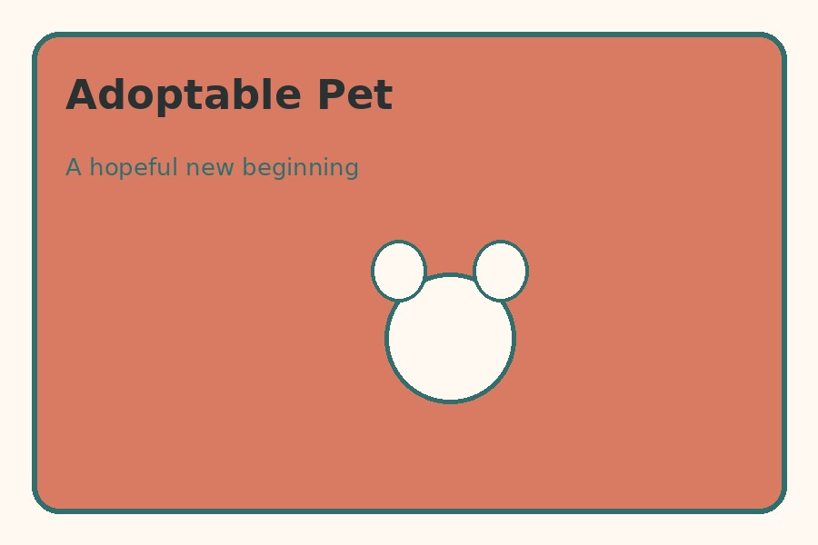
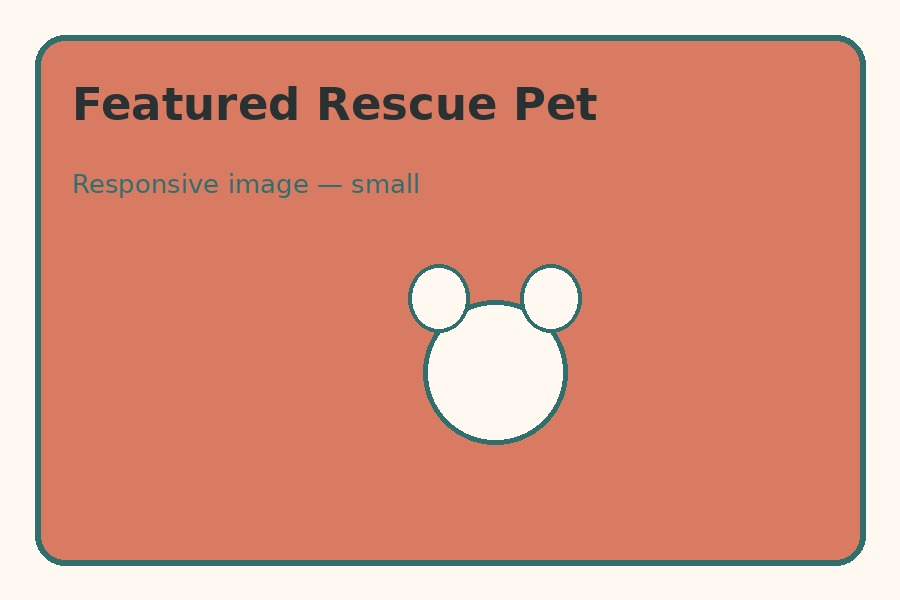

Adoption Support
We guide families through the adoption process and help match pets with suitable homes.
Twin Cities Animal Rescue
Twin Cities Animal Rescue connects animals with adopters, foster families, volunteers, and community partners.
See How You Can Help
We work to give animals a second chance through adoption support, foster care, volunteer service, and community education.
We guide families through the adoption process and help match pets with suitable homes.
Foster families provide temporary homes that help animals feel safe while waiting for adoption.
Volunteers support events, animal care, outreach, and other rescue needs.

Meet one of the animals currently waiting for a caring home and a fresh start.
You can make a difference by adopting, fostering, volunteering, or sharing rescue opportunities with others.
Volunteer or Foster